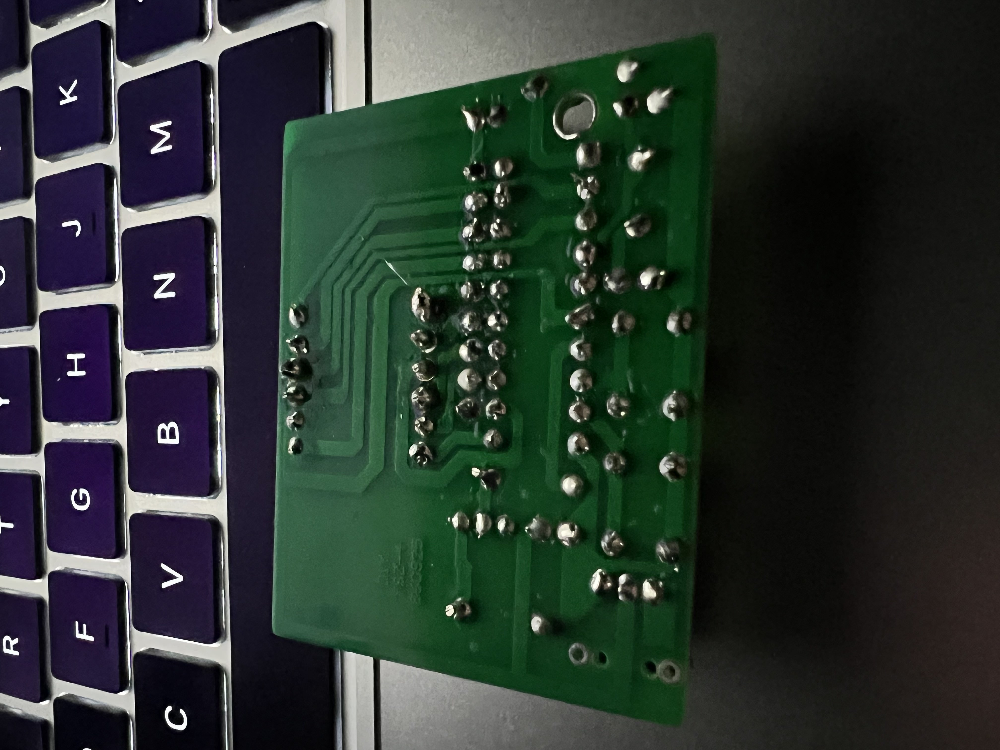
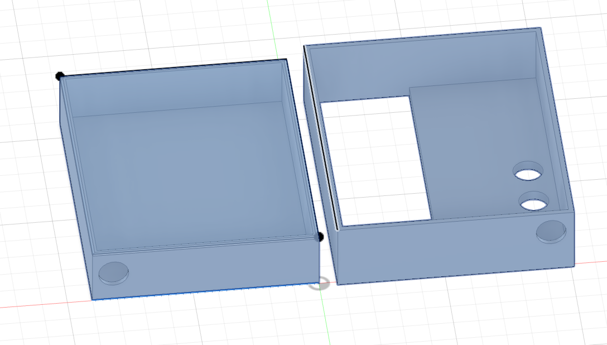
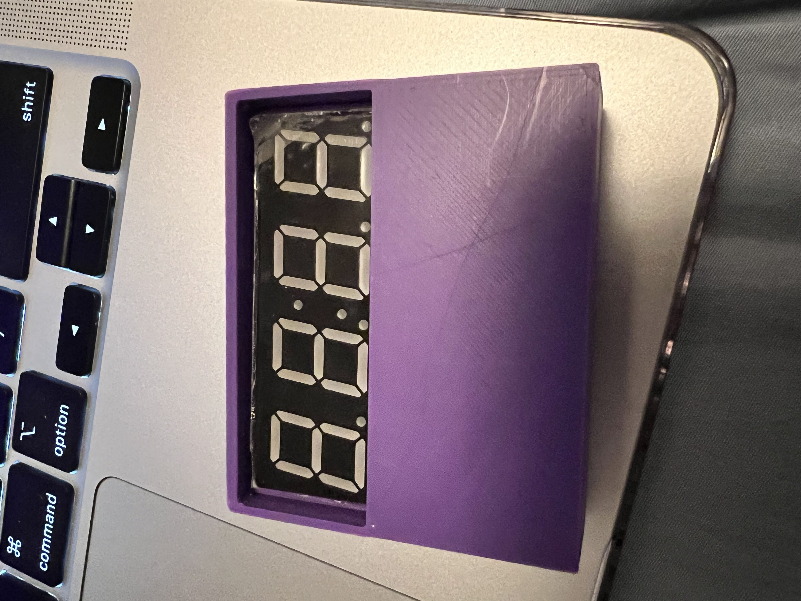
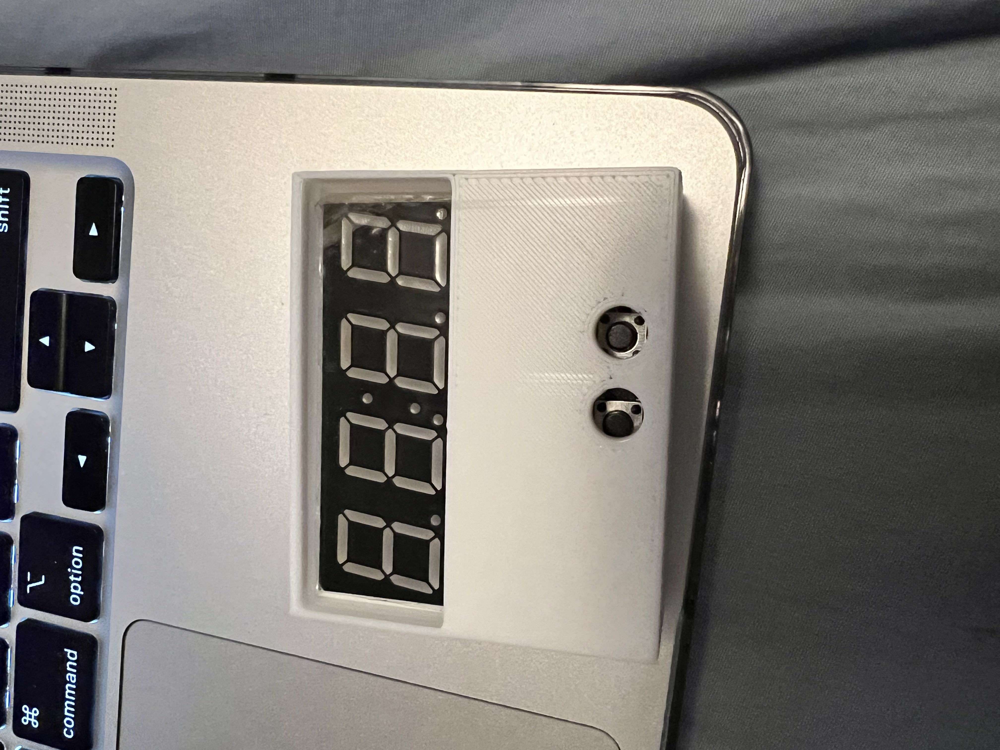
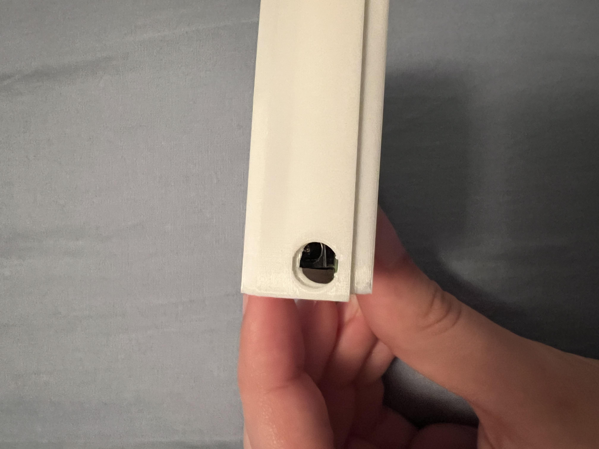
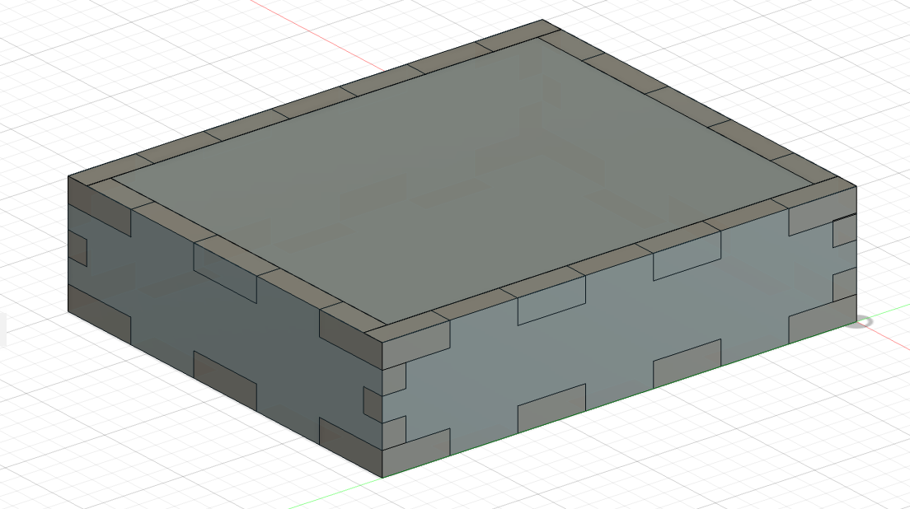
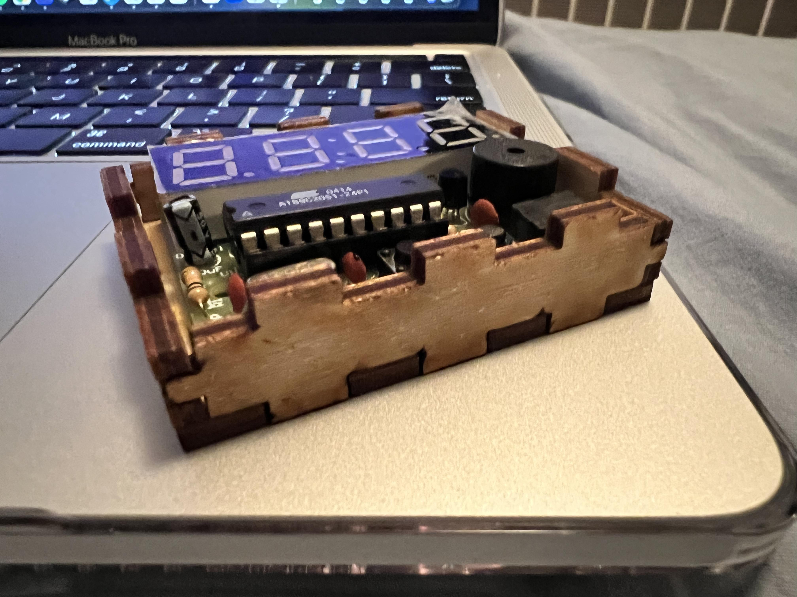

My Project 3 Reflection
Soldering
The initial part of the project involved soldering the components of the alarm clock together. I learned how to solder the components together, such as the resistors, capacitors, and the buttons. I found this part particularly challenging as I had to get really close to see what I was doing and my eyes ould often hurt from staring at the small board for so long. I think I did a pretty decent job except for the last part where I had some bridging but was able to melt it apart and fix it.
3D Printing Fusion Design
Our first task for form and fit was to make a 3D printed box for the alarm clock. This was my final design that I made in fusion. What I did for this project was usually take the measurements and make sure the alarm would fit in the box, then go back in and create holes for the buttons
First 3D Printed Box
The first 3D print was a success, but there were some intial stressing points since the allowance for the top and bottom was very small, and the print was very thin. Luckily, I was able to little by little get the top and bottom to fit together and not struggle to take them apart. The fit was also impeccable as the alarm clock fit perfectly in the box.
Second 3D Printed Box
 This was the 2nd 3D print including the holes for the button and charging cable. I found this print to be more functional but maybe due to minute bed leveling deviations, this box was a little harder to put together and take apart.
Laser Cutting Fusion Design
Our second task for form and fit was to make a laser cut box for the alarm clock. I also struggled with this design as I had to make sure the finger joints were aligned and the box was the right size given the thickness of the wood. Fusion was also a little difficult to work with as I had to make a lot of adjustments and measurements but it would be really slow and sometimes freeze my computer, leaving me having to repeat some parts of the process. Otherwise, once I figured it out and worked from a differernt computer, it was a lot easier to work with and I was able to make a design I was happy with.
First Laser Cut Box
My first laser cut box was a success, but there were some intial stressing points since the allowance between the fingerjoints seemed to be too large, thus the box will fall apart sometimes. I will also have to go back in and add the holes for the screen and buttons as well as making changes to the height of the box since the lid doesn't fit it at all due to the screen being slightly higher than what I calculated.
Second Laser Cut Box

TEMPORARY UNTIL I PRINT MY 2ND BOX